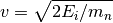

CreateEPP dialog.
Table of Contents
| Name | Direction | Type | Default | Description |
|---|---|---|---|---|
| InputWorkspace | Input | MatrixWorkspace | Mandatory | An input workspace. |
| OutputWorkspace | Output | TableWorkspace | Mandatory | The calculated output EPP table. |
| Sigma | Input | number | 0 | The value to fill the Sigma column with. |
This algorithm generates an elastic peak position (EPP) table like the one created by the FindEPP algorithm. Unlike FindEPP which finds the elastic peak positions by fitting, CreateEPP calculates the peak position from the instrument geometry and incident energy. The algorithm is can be used in cases where FindEPP fails e.g. due to poor signal-to-noise ratio.
The ideal elastic peak position  corresponds to the time-of-flight between the source and the detector:
corresponds to the time-of-flight between the source and the detector:
 ,
,
where  is the source-to-sample distance,
is the source-to-sample distance,  is the sample-to-detector distance and
is the sample-to-detector distance and  is the neutron velocity. The velocity in turn is given by
is the neutron velocity. The velocity in turn is given by
,
where  is the incident energy and
is the incident energy and  the neutron mass.
the neutron mass.
CreateEPP reads from the ‘Ei’ sample log entry of InputWorkspace.
The columns in the OutputWorkspace are the same as in FindEPP. Since the calculation done by CreateEPP gives only the ideal elastic peak positions, the rest of the columns are filled as follows:
Example - CreateEPP
from mantid.kernel import DeltaEModeType, UnitConversion
import numpy
CreateSampleWorkspace(
OutputWorkspace='exWS',
Function='Flat background',
NumBanks=3,
BankPixelWidth=2,
Xmax=10000,
BinWidth=50,
PixelSpacing=0.01,
BankDistanceFromSample=1.0
)
ws = mtd['exWS']
# Fill the sample workspace with some Gaussian elastic peaks.
Ei = 10.0 # Incident energy, in meV.
def peak(xs, centre): # A helper function to generate a peak.
xs = (xs[:-1] + xs[1:]) * 0.5 # Convert bin edges to bin centres.
ys = 10.0 * numpy.exp(-numpy.square((xs - centre) / 100))
return ys
instrument = ws.getInstrument()
source = instrument.getSource()
sample = instrument.getSample()
L1 = sample.getDistance(source)
for i in range(ws.getNumberHistograms()):
detector = ws.getDetector(i)
L2 = sample.getDistance(detector)
tof = UnitConversion.run('Energy', 'TOF', Ei, L1, L2, 0.0, DeltaEModeType.Direct, Ei)
ys =ws.dataY(i)
ys += peak(ws.dataX(i), tof)
# The 'Ei' sample log shall hold the incident energy.
ws.mutableRun().addProperty('Ei', Ei, True)
# Compare CreateEPP and FindEPP results.
createEPPWS = CreateEPP(InputWorkspace=ws)
findEPPWS = FindEPP(InputWorkspace='exWS')
epp1 = createEPPWS.cell('PeakCentre', 0)
print('CreateEPP gives {0:.8f} as the first elastic peak position.'.format(epp1))
epp2 = findEPPWS.cell('PeakCentre', 0)
print('FindEPP gives {0:.8f}.'.format(epp2))
Output:
CreateEPP gives 7952.80766719 as the first elastic peak position.
FindEPP gives 7952.80766888.
Categories: Algorithms | Utility
C++ source: CreateEPP.cpp (last modified: 2018-03-07)
C++ header: CreateEPP.h (last modified: 2018-03-07)